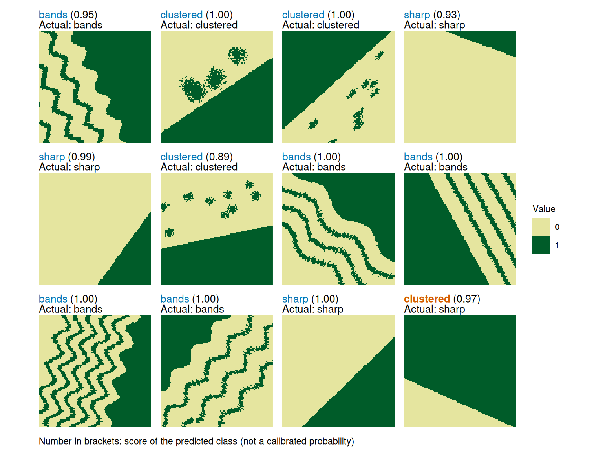

This guide shows how to train a classifier on categorical landscape rasters and use it to classify new landscapes. The pixel-based workflow uses a convolutional neural network (CNN) from the keras3 package to learn directly from raster-cell values.
The example uses the same three ecotone patterns as the quick example in Get started with patternscaper: sharp, clustered, and bands.
Overview
The workflow has three steps:
- Prepare labelled training landscapes with known patterns
- Train the classifier on the landscape pixel data with
train_pixel_model() - Classify new landscapes with
apply_pixel_model()and evaluate the predictions when their true patterns are known
Before you begin
Set up Keras
Pixel models use keras3 with a TensorFlow backend. Complete the installation guide before starting this workflow.
In a fresh R session, initialize Keras and verify which backend it is using:
keras3::config_backend()
#> Downloading uv...Done!
#> [1] "tensorflow"
#> [1] "tensorflow"This must return "tensorflow" before the pixel workflow can run. The call initializes Keras and Python, so it is an active verification that your setup works correctly. If it returns another backend or raises an error, return to the Keras installation guide and look at reticulate::py_config() in the failed session.
Set seeds for reproducibility
Use set.seed() before generating landscape datasets and set_random_seed() immediately before each model fit. The first resets only R’s random number generator (RNG), while the second resets both R’s and Keras’ RNG. Exact results can still vary slightly across hardware and software configurations.
Step 1: Create training landscapes
Create training landscapes with known patterns. The artificial landscape guide explains how to create training batches, and the pattern gallery shows the available patterns and their parameters. Alternatively, import your own raster or matrix data as described in Import user-defined landscapes. See Matching training and application data for pixel-model input requirements.
set.seed(1)
# Generate 100 training landscapes from 3 ecotone patterns
training_landscapes <- create_landscapes(
n = 100,
patterns = c("sharp", "clustered", "bands")
)
#> ✔ Successfully generated all 100 training landscapesTraining landscapes should represent the pattern classes, variation, and ecological scale expected in the application data.
Step 2: Train the model
train_pixel_model() treats the numeric land-cover codes as unordered categories and converts each code into its own binary input channel.
The default "multiscale" CNN learns spatial features at different neighbourhood sizes. You can adjust settings such as the number of epochs, batch size, learning rate, and dropout. See ?train_pixel_model for details. If you are familiar with Keras, you can also supply a custom architecture (see the custom architecture section).
Here, we train one model on all training landscapes for 20 epochs. Model training also supports early stopping and cross-validation.
set_random_seed(2)
model <- train_pixel_model(
landscapes = training_landscapes,
cv_method = "none",
epochs = 20,
verbose = FALSE
)Save and reload the model
A pixel model combines a trained Keras network with R metadata. Save and reload the complete classifier with save_pixel_model() and load_pixel_model():
pixel_model_bundle <- tempfile("pixel-model-")
save_pixel_model(model, pixel_model_bundle)
model <- load_pixel_model(pixel_model_bundle)The model directory contains model.keras and metadata.rds. Keep the complete directory to apply the model in a future R session without retraining. Set overwrite = TRUE to replace an existing model bundle.
Step 3: Classify new landscapes
Use apply_pixel_model() to classify landscapes that were not used for training. These landscapes can serve two roles:
- Labelled test landscapes have known patterns and can be used to evaluate model performance
- Application landscapes have unknown patterns and can be classified with the fitted model
The function call is the same in both cases. This example uses a labelled, independent test set so that both the predictions and model performance can be inspected. Application landscapes could instead be imported data or simulation output; see Import user-defined landscapes.
Pixel-model inputs
Application landscapes must contain one categorical raster layer with no
NAcells. They may omit land-cover codes used during training, but cannot introduce new ones.apply_pixel_model()resizes rasters to the training dimensions and warns when a different aspect ratio would stretch the pattern. Training and application landscapes should also represent comparable ecological extents and resolutions. See Matching training and application data for details.
# Use a separate seed for independent test landscapes
set.seed(4)
# Create 30 test landscapes, 10 from each training pattern
test_landscapes <- create_landscapes(
n = 30,
patterns = c("sharp", "clustered", "bands")
)
#> ✔ Successfully generated all 30 training landscapesBecause these artificial test landscapes retain their true pattern labels, the default evaluate = "auto" also evaluates the predictions. The same function call applies to landscapes with unknown patterns, but no performance evaluation is returned.
Optional performance evaluation
Performance is evaluated automatically when true patterns are known. Use
evaluate = "none"to classify without evaluation, even when the landscapes carry pattern labels. Useevaluate = "required"to raise an error when performance cannot be evaluated.
# Classify test landscapes using the trained model
classification <- apply_pixel_model(
landscapes = test_landscapes,
model = model,
verbose = FALSE
)The result always contains a prediction table in $predictions. It lists the predicted pattern class, the predicted-class score, and one score for every class the model learned. If available from the input data, it also gives the actual pattern label. $performance contains evaluation results for labelled landscapes and is NULL otherwise.
# Predicted patterns
classification$predictions
#> # A tibble: 30 × 8
#> landscape_id landscape_name actual_class predicted_class score bands
#> <int> <chr> <chr> <chr> <dbl> <dbl>
#> 1 1 bands_1_rot64 bands bands 0.954 0.954
#> 2 2 clustered_2_rot146 clustered clustered 1.000 0.0000728
#> 3 3 clustered_3_rot318 clustered clustered 1.000 0.000153
#> 4 4 sharp_4_rot20 sharp sharp 0.928 0.0105
#> 5 5 sharp_5_rot126 sharp sharp 0.995 0.000932
#> 6 6 clustered_6_rot168 clustered clustered 0.893 0.107
#> 7 7 bands_7_rot42 bands bands 0.999 0.999
#> 8 8 bands_8_rot241 bands bands 1.000 1.000
#> 9 9 bands_9_rot105 bands bands 1.000 1.000
#> 10 10 bands_10_rot311 bands bands 1.000 1.000
#> # ℹ 20 more rows
#> # ℹ 2 more variables: clustered <dbl>, sharp <dbl>The per-class scores are non-negative and sum to one, but they are not calibrated probabilities. The score column contains the largest per-class score for each landscape. Compare the per-class scores within a row to assess how decisive the model was: one dominant score indicates stronger support for one class, while similar scores indicate ambiguity. A score of 0.8 does not mean that the prediction has an 80% probability of being correct.
For labelled test landscapes, use the performance results to inspect the confusion matrix, overall model accuracy, and class-specific precision, recall, and F1-score:
classification$performance$confusion_matrix
#> Actual
#> Predicted bands clustered sharp
#> bands 10 0 0
#> clustered 0 9 1
#> sharp 0 1 9
classification$performance$accuracy
#> [1] 0.9333333
classification$performance$per_class_metrics
#> # A tibble: 3 × 5
#> class count recall precision f1_score
#> <chr> <dbl> <dbl> <dbl> <dbl>
#> 1 bands 10 1 1 1
#> 2 clustered 10 0.9 0.9 0.9
#> 3 sharp 10 0.9 0.9 0.9Use plot_classified_landscapes() to show landscapes with their true and predicted patterns. Correct classifications are blue and misclassifications are bold orange. The example shows 12 of the 30 test landscapes to keep the figure readable. Set only_misclassified = TRUE to show only misclassifications.
Note
If you classified landscapes where the true patterns are not known, the plot will show the landscape and the predicted pattern only.
# Visualize true and predicted patterns
plot_classified_landscapes(
classification = classification$predictions,
landscapes = test_landscapes,
subset_index = 1:12,
ncol = 4
)
Optional: Stop training early with validation data
You can use validation data to stop training when validation loss no longer improves. The default callback stops after patience epochs without improvement and then restores the model weights from the best epoch. This option requires cv_method = "none".
Early stopping can reduce overfitting to the training data, but the validation set must be large enough and representative of the data the model will later classify. It must contain every training pattern class and use the same raster dimensions and land-cover codes. Here, we create a separate set of artificial validation landscapes.
# Create validation landscapes
set.seed(3)
validation_landscapes <- create_landscapes(
n = 30,
patterns = c("sharp", "clustered", "bands")
)
# Train with early stopping based on validation loss
set_random_seed(2)
early_stopped_model <- train_pixel_model(
landscapes = training_landscapes,
validation_landscapes = validation_landscapes,
cv_method = "none",
epochs = 100,
patience = 15,
verbose = FALSE
)If a separate validation set is not available, validation_split = 0.2 creates a stratified split from the training landscapes. Validation results can guide model development, but they do not replace evaluation on an untouched test set.
Optional: Estimate performance with cross-validation
The independent test set above evaluates the final classifier on new, labelled landscapes. Cross-validation serves a different purpose: it assesses how consistently a model classifies held-out subsets of the training data. This can help when comparing model settings.
Cross-validation can also estimate model performance when too few labelled landscapes are available for an independent test. If it is used to choose model settings, its results are not a final independent evaluation.
The following code runs five-fold cross-validation. It is not executed when this guide is rendered because pixel-model training is computationally expensive.
# Reset both random-number generators immediately before cross-validation
set_random_seed(2)
cv_model <- train_pixel_model(
landscapes = training_landscapes,
cv_method = "k-fold",
cv_folds = 5,
epochs = 20,
verbose = FALSE
)
cv_model$performance$confusion_matrix
cv_model$performance$accuracy
cv_model$performance$per_class_metricsThe summaries combine the held-out predictions from all folds. Each landscape is classified once by a model that was not trained on that landscape. After cross-validation, the returned final model is trained on all training landscapes.
Cross-validation folds run for the full number of epochs and cannot use validation data. For small or unbalanced training sets, train_pixel_model() may reduce the number of folds or switch to leave-one-out cross-validation. Leave-one-out trains one model per landscape and is only practical for very small datasets. See ?train_pixel_model for details.
Optional: Use a custom model architecture
If you are familiar with Keras, you can pass a model-building function to the architecture parameter. The function must accept the four arguments shown below and return a new, uncompiled Keras model. train_pixel_model() then compiles and trains it.
shallow_cnn <- function(input_shape, n_classes, dropout_rate, dense_units) {
keras3::keras_model_sequential(input_shape = input_shape) |>
keras3::layer_conv_2d(
filters = 32,
kernel_size = c(3, 3),
activation = "relu"
) |>
keras3::layer_max_pooling_2d() |>
keras3::layer_flatten() |>
keras3::layer_dropout(rate = dropout_rate) |>
keras3::layer_dense(units = dense_units, activation = "relu") |>
keras3::layer_dense(units = n_classes, activation = "softmax")
}
set_random_seed(2)
custom_model <- train_pixel_model(
landscapes = training_landscapes,
architecture = shallow_cnn,
cv_method = "none",
epochs = 20,
verbose = FALSE
)The model must have exactly one two-dimensional output, with one output unit for each pattern class. The n_classes argument supplies this number automatically. The final layer must explicitly configure a softmax activation, either directly or through layer_activation("softmax"). Use the built-in architecture unless you are comfortable designing and evaluating neural networks.